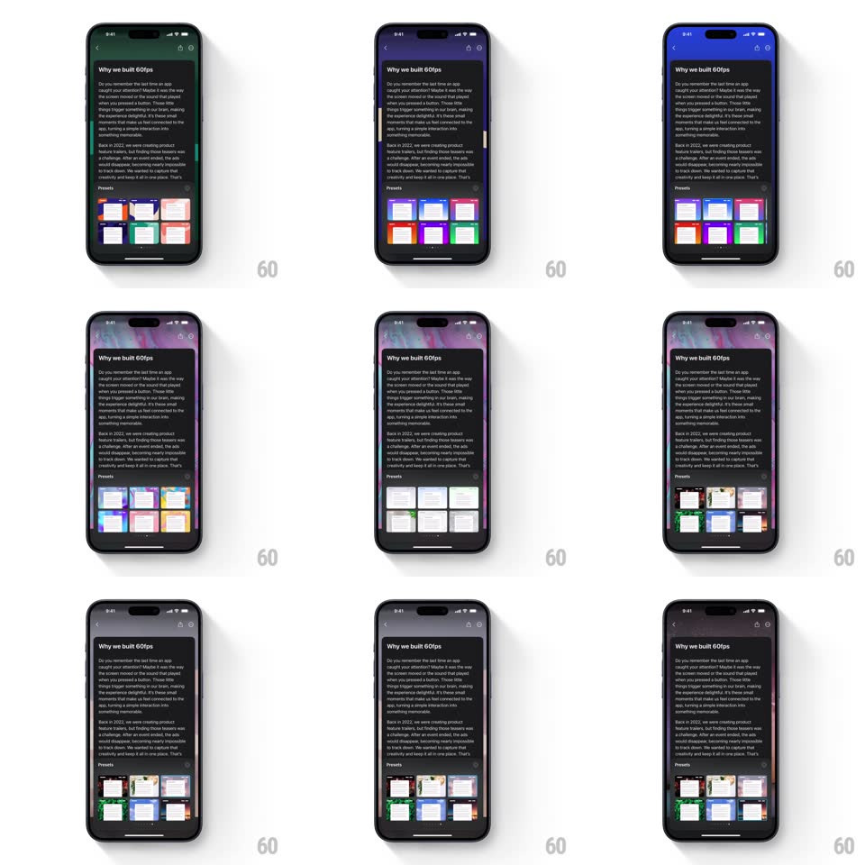

Media
Frame-by-frame

Rebuild this interaction 1:1: Craft's background preset sheet - a "Presets" grid of six gradient swatches sits at the bottom of a document, and tapping a swatch instantly applies that gradient to the entire document background behind it, tinting the page while the grid stays put.

Rebuild this interaction 1:1: Craft's background preset sheet - a "Presets" grid of six gradient swatches sits at the bottom of a document, and tapping a swatch instantly applies that gradient to the entire document background behind it, tinting the page while the grid stays put.
## Integration
Integration: stack-agnostic spec - springs given as stiffness/damping, timed motions as duration + curve; map every value to your framework and animation library of choice.
## Scene
A Craft document ("Why we built 60fps", body text) in dark mode. Bottom section: "Presets" label and a 3x2 grid of rounded gradient swatches (blue, green, orange, purple, pink, and friends). Tapping one re-skins the whole page background.
## Motion spec
Pattern: live-preview preset picker.
- Tap swatch: the document background crossfades to the selected gradient (300ms, ease-in-out), edge to edge, including behind the text and the preset grid itself.
- The selected swatch gets a 2px accent ring (fade+scale in, 150ms); the previous ring fades out.
- Text and content stay fixed - only the background layer animates; text contrast adjusts per theme (system foreground colors).
- Swatch press feedback: scale 0.92 for 100ms, spring back (~380/24).
## Calibration
- The gradient applies to the page canvas, not a preview thumbnail - the user sees the real result immediately.
- Crossfade only: no sliding, no wipes between themes.
## Reduced motion
Background swaps instantly (no crossfade); ring appears without animation.
## Don't miss
- The preset grid scrolls with the document - it is content, not a floating sheet.
- The swatch grid itself sits on the changing background - keep its contrast readable on every preset.